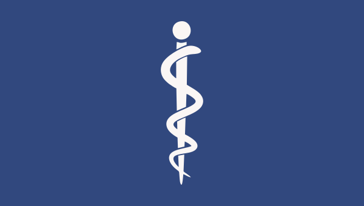

Medicina

Medicina é a arte de curar, não só o corpo, mas também a alma
Duração e Estrutura: O curso de medicina geralmente dura de 6 a 7 anos, dependendo do país e do currículo da instituição. Nos primeiros anos, os alunos estudam disciplinas básicas como anatomia, fisiologia, bioquímica e histologia. Posteriormente, passam para disciplinas clínicas, como medicina interna, cirurgia, pediatria, ginecologia, entre outras.
Aulas Teóricas e Práticas: As aulas teóricas geralmente são ministradas nos primeiros anos e abrangem fundamentos científicos e médicos. À medida que os alunos avançam, as aulas práticas se tornam mais proeminentes, com oportunidades de trabalhar com pacientes reais em hospitais e clínicas.
Estágios Clínicos: Uma parte crucial do curso de medicina são os estágios clínicos, nos quais os alunos têm a oportunidade de aplicar seus conhecimentos teóricos na prática, sob supervisão. Isso geralmente ocorre nos últimos anos do curso e permite que os alunos desenvolvam habilidades práticas de diagnóstico, tratamento e interação com os pacientes.
Rigor Acadêmico: O curso de medicina é conhecido por seu rigor acadêmico. Os alunos precisam dedicar muito tempo ao estudo, à revisão e à prática clínica para ter sucesso. Isso pode significar longas horas de estudo e turnos em hospitais durante os estágios.
Avaliações e Exames: Os alunos são avaliados regularmente por meio de exames escritos, exames práticos e avaliações clínicas. A pressão para se sair bem nessas avaliações é alta, pois elas determinam a progressão no curso e, eventualmente, a qualificação como médico.
Especializações e Residência: Após a conclusão do curso de medicina, muitos graduados optam por prosseguir com a especialização em uma área específica da medicina. Isso geralmente envolve completar um programa de residência em um hospital, onde os médicos residentes recebem treinamento prático intensivo em sua especialidade escolhida.
Desafios Emocionais e Éticos: Além dos desafios acadêmicos, o curso de medicina também pode ser emocionalmente desafiador. Os alunos lidam com situações de vida ou morte, doença e sofrimento humano, o que pode ser difícil de enfrentar. Além disso, questões éticas complexas surgem regularmente, exigindo que os estudantes ponderem sobre o que é certo em termos médicos e morais.
No geral, o curso de medicina é uma jornada intensa, mas extremamente gratificante, que prepara os alunos para uma carreira dedicada a cuidar da saúde e do bem-estar dos outros.